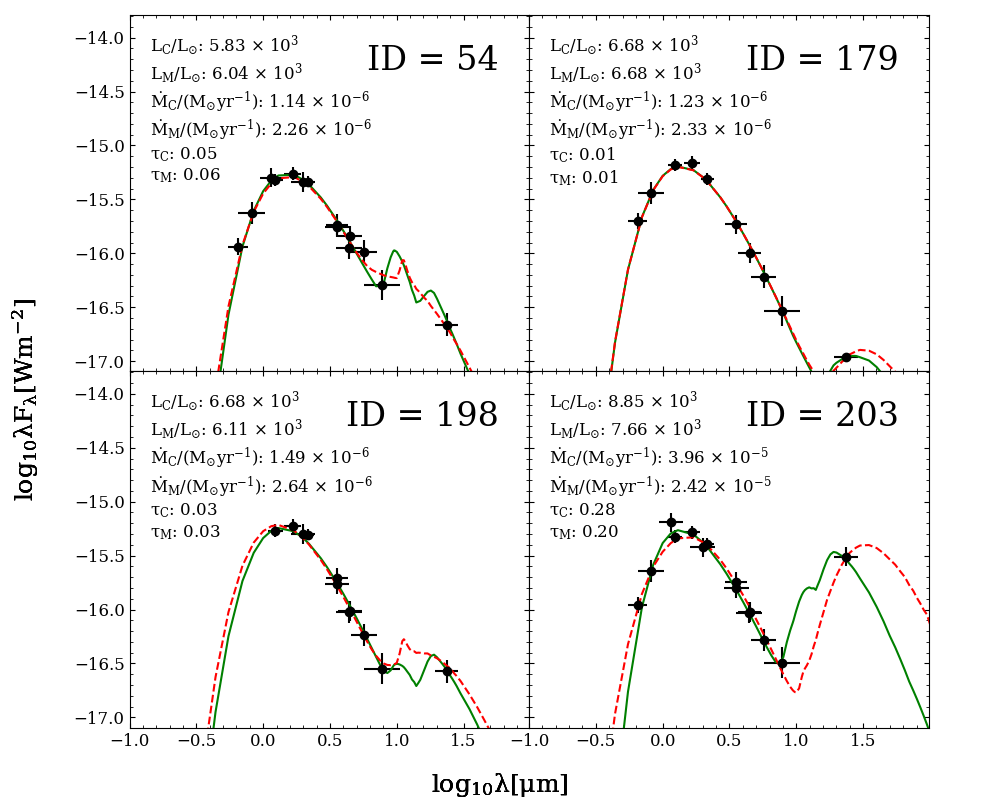

塵に包まれた星の光を読む
ところが、遠方の星について、１年間にどれだけの物質が流れ出しているかを直接測るのは難しい。周囲を覆う塵は星の光を吸収し、赤外線として放射する。そのため、さまざまな波長で測った明るさを並べると、星と塵を合わせた光の分布が現れる。これが「スペクトルエネルギー分布」、略してSEDである。塵に包まれた星の様子を、光の色の配分から読み解く方法といってよい。
Mahaniらが開発した「SEDust」は、このSEDを理論モデルと照らし合わせる作業を自動化するパイプラインだ。基盤にあるのは、塵による吸収、散乱、再放射を計算する放射輸送コード「DUSTY」。観測点に合うモデルを探し、星の光度や星周塵の光学的な厚さ、質量放出率を推定する。炭素に富む塵と酸素に富む塵では、光を吸収する性質が違う。研究では両者を区別したモデルを用意している。


図を選ぶと原寸画像を開けます。
銀河へ戻るガスと塵の量
研究チームは、この方法を局所銀河群にある矮小銀河NGC 6822に適用した。対象はAGB星など1610天体。近赤外線から中間赤外線まで８つの波長帯で得られた測光データを用いている。銀河全体でこれらの星が放出するガスと塵の合計は、年あたり約0.0037太陽質量と推定された。毎年、太陽１個の質量の約270分の１に相当する物質が、進化した星から周囲へ供給される計算になる。
別の方法で見積もると、結果はSEDustの推定値に対して約2.3分の１から約2.4倍まで開く。この幅には、統計誤差に加え、理論モデルや推定方法の違いによる不確かさが表れている。
さらに、光として観測しやすい塵から、見えにくいガスの質量へ換算する際には「ガスと塵の質量比」という仮定が要る。著者らは基準値として200を採用した。ただし、この比が環境によって変われば、質量放出率の結論も大きく動く。実際、金属量を考慮した別の比を使うと、銀河へのガス供給についての解釈まで変わり得る。
この論文は、進化した星が銀河にどれだけ物質を戻すかという問いと、その量をどう確からしく測るかという問いを同時に扱っている。赤外線で見える塵と、電波で調べるガスの運動を組み合わせる研究にとっても、方法の違いが生む幅を意識させる仕事である。